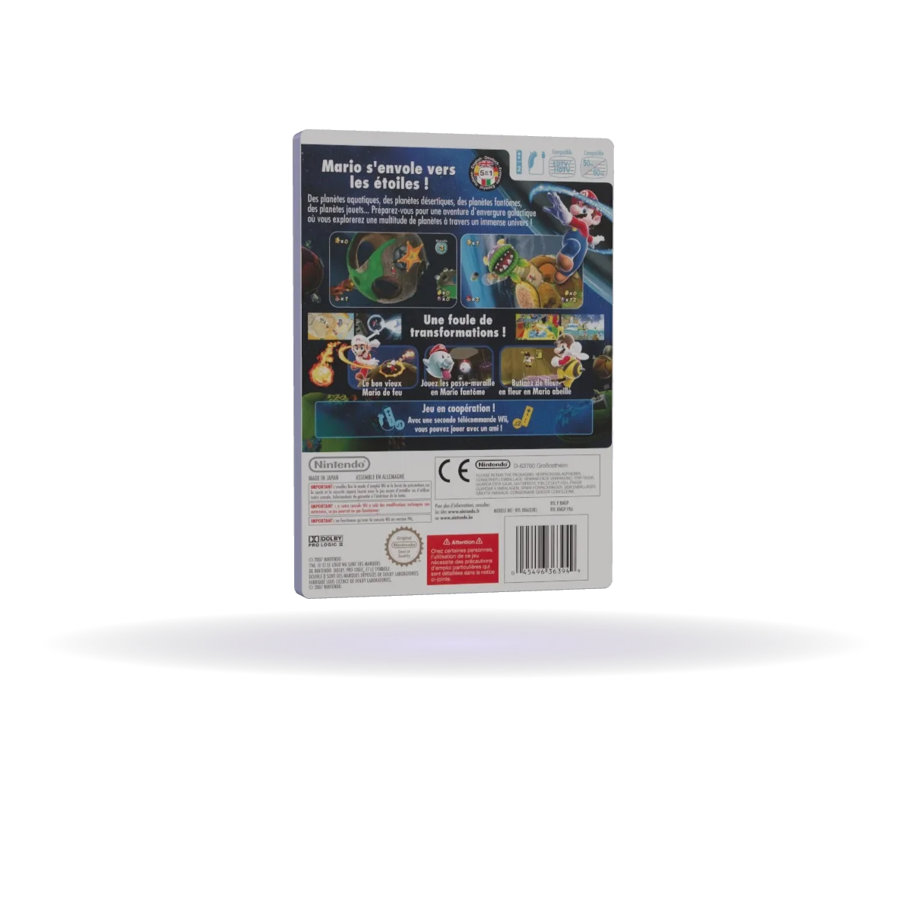
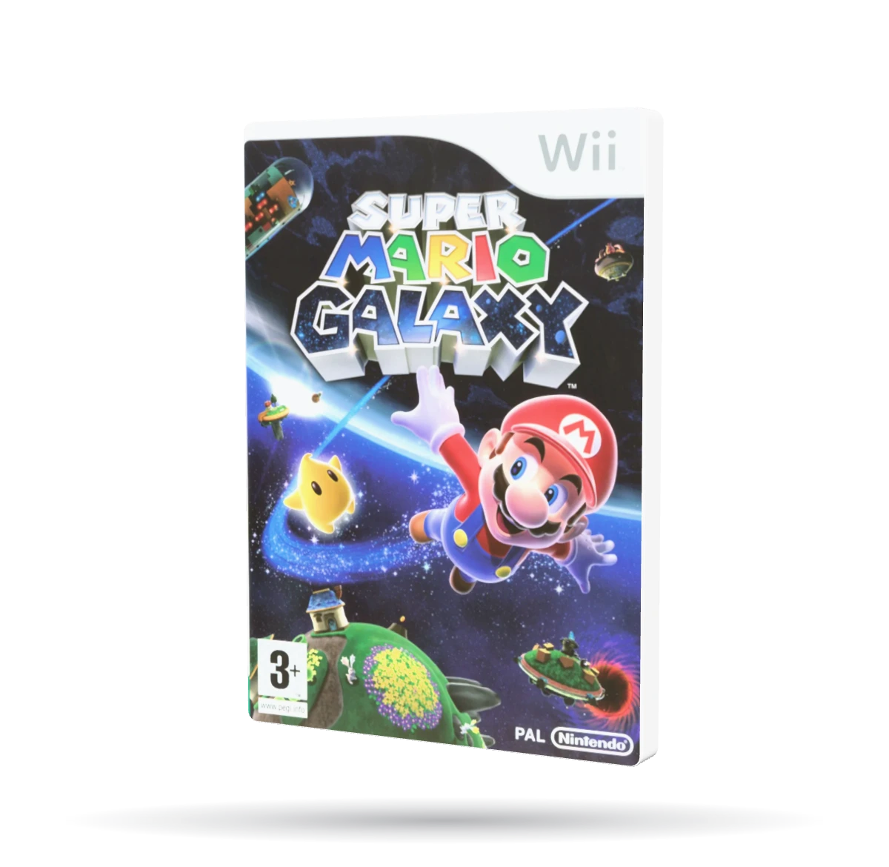
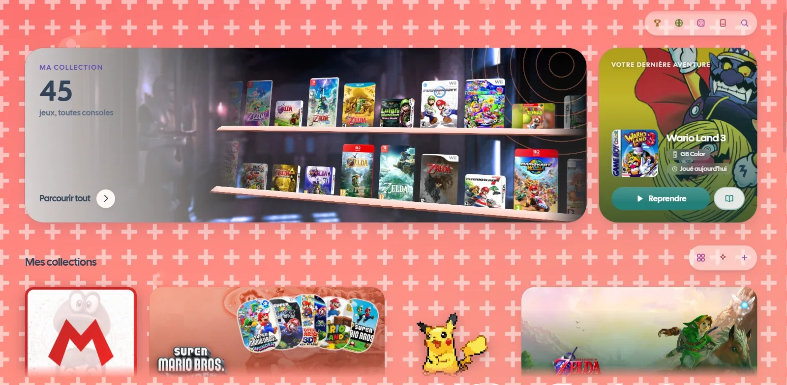
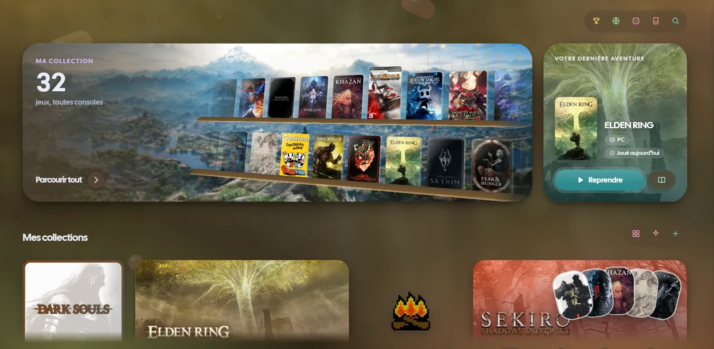
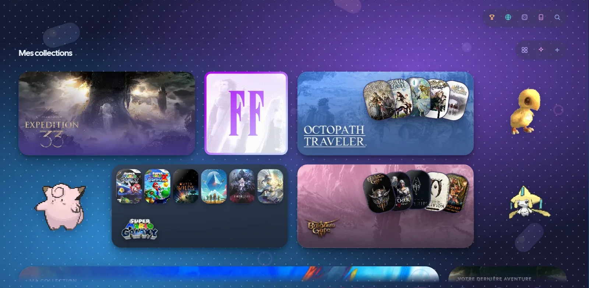
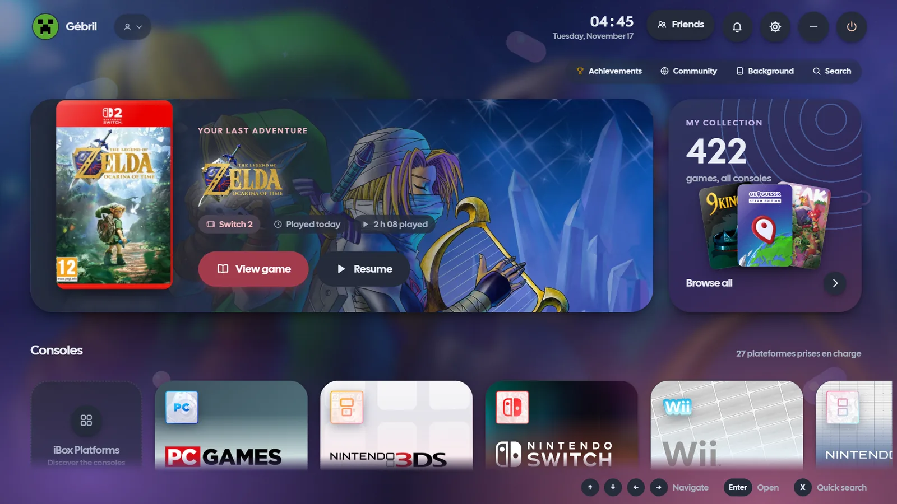

Your games deserve better than a list.
Rediscover the pleasure of a real collection. Your PC and console games, together in 3D cases you can pick up and handle.
Free and open source. Windows 10 and 11, Steam Deck in preview.

Five games, five case formats, exactly as iBox shows them.
Hover a case, spin it, click to open it.
The case is real again.
The front
The original cover, under the sleeve of the case.
The spine
The one your finger looks for on the shelf.
The back
The blurb, the screenshots, the barcode. It’s all there.
The opening
The front swings on its hinge, just like the real one.
The disc
It lifts off the hub and turns under the light.
The booklet
When the manual exists, it waits in its clips, ready to be leafed through.
Super Mario Galaxy, Wii, 2007. Drag the case to turn it yourself.
The case is real again.

The front
The original cover, under the sleeve of the case.

The spine
The one your finger looks for on the shelf.

The back
The blurb, the screenshots, the barcode. It’s all there.

The opening
The front swings on its hinge, just like the real one.

The disc
It lifts off the hub and turns under the light.

The booklet
When the manual exists, it waits in its clips, ready to be leafed through.
Super Mario Galaxy, Nintendo Wii, 2007.
Every console has its format.
Seven case formats, modelled at their real dimensions. Pick a game and take it in hand.

Super Mario Galaxy
Nintendo Wii, 2007
- Case
- 136 × 191 × 14 mm
- Media
- disc
Drag to turn the case.
iBox recognises 26 consoles, on top of your PC games: Atari 2600, NES, Master System, Mega Drive, Game Boy, Super Nintendo, Game Gear, Jaguar, PlayStation, Saturn, Nintendo 64, Game Boy Color, Dreamcast, PlayStation 2, GameCube, Game Boy Advance, Xbox, DS, PSP, Xbox 360, Wii, PlayStation 3, 3DS, Wii U, Switch, Switch 2. GameCube, PlayStation and PlayStation 2 cases are modelled in the app too.
All your games, one collection.
Your Steam, Epic Games and GOG games join the ones from your consoles. You sort them into collections, iBox puts them on the shelf.
A library that looks like you.
Twelve palettes, a night mode, collections illustrated your way. Here are four example setups, captured in iBox.




Peach palette. Mario, Hyrule, Wario and the handhelds, each with its collection.
Sand palette. Steam games sorted by series, the toughest ones first.
Lavender palette, at night. Final Fantasy, pixel art and hundred-hour epics.
Forest palette. Zelda from the Wii to the Switch, on the same shelf.
Example setups made for this page. They are not player accounts. The app is shown in French here; it is fully available in English.
You play, iBox handles the rest.
iBox reads your Steam, Epic Games and GOG libraries, play time included.

One click per console, from the official source. If you already have yours, iBox keeps it.

Settings suited to your PC, game by game, with a preview before every change and a way back.

The whole interface works with a controller, a keyboard or a mouse, by day or by night.

Your Steam achievements and RetroAchievements in one place, with the next ones within reach.

Remote PlayExperimental Share a game’s screen with your friends, up to six players, each with their own controller, computer to computer. How it works
A place in your living room.
Full screen on the television or in your hands, it is the same library.
Windows
Windows 10 and 11, 64‑bit. The complete version: library, emulators, in‑game overlay and Remote Play.
Steam DeckPreview
An AppImage built for Game Mode: a single window, the Deck’s controls, iBox in your Steam library.
Still Windows only: hosting a Remote Play session, the in‑game overlay and the stores without a Linux version (EA, Ubisoft, Xbox, Battle.net).
Your collection is waiting.
Windows 10 and 11, 64‑bit
AppImage, Steam Deck and 64‑bit Linux
Free and open source, under the MIT licence. No account, no ads.